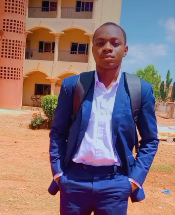

Je m'appelle TOU Yasso Cheick Enfane , étudiant en genie informatique a l'université Aube Nouvelle.
Je suis passionné par l'apprentissage et le développement personnel, j’ai toujours été animé par l’envie d’avoir un impact positif autour de moi.
En parallèle de mes études, je suis un promoteur, je suis egalement un infographiste et création d’affiches.
Mon objectif est de continuer à apprendre, à servir, et à évoluer dans un environnement qui valorise la responsabilité, l’innovation et l’engagement.